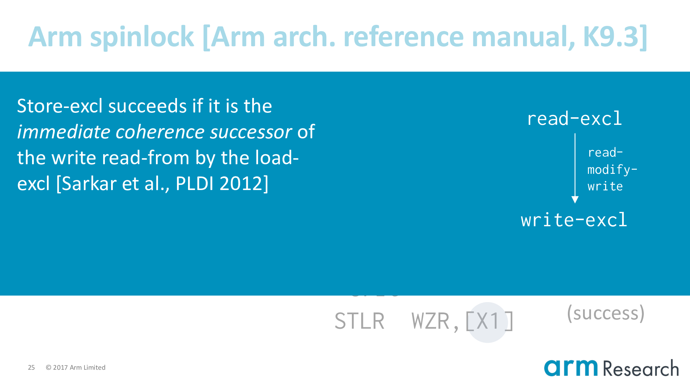
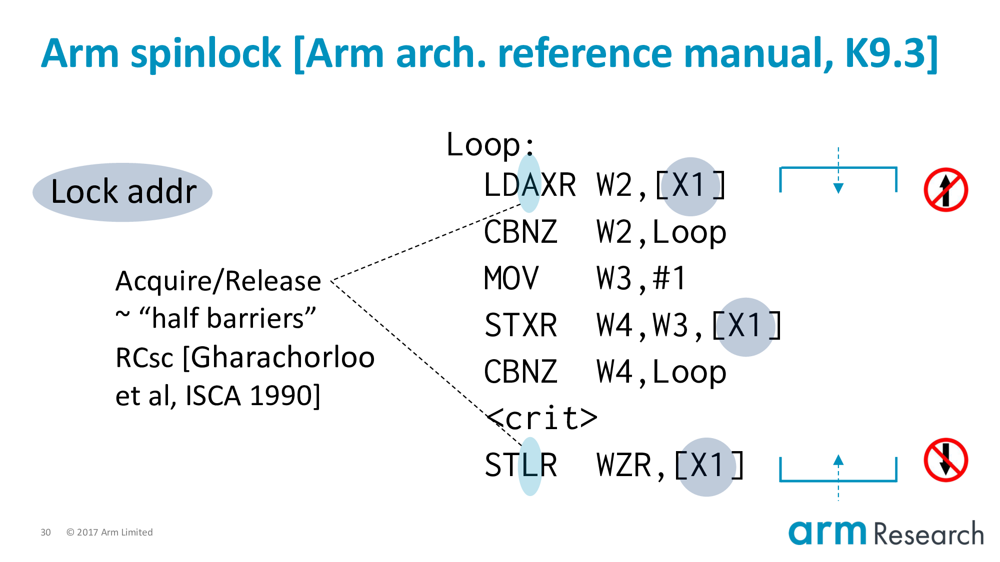
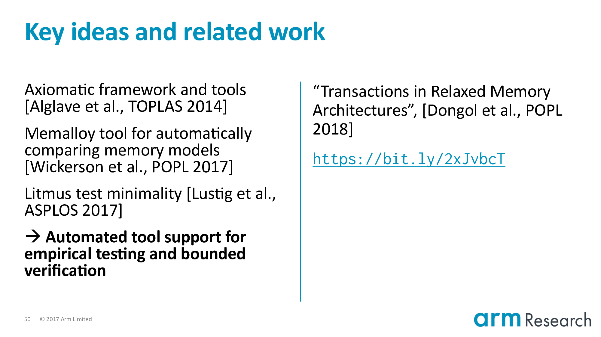

Home > Annotated PLDI 2018 talk
The Semantics of Transactions and Weak Memory in x86, Power, ARM, and C++
Annotated slides of my talk (pdf) from PLDI 2018. The slide annotation code is adapted from KC Sivaramakrishnan (CC BY 4.0).
Slide of ( ← and → arrow keys also work)
My two co-authors, Tyler Sorensen and John Wickerson, of Imperial College London.
Our work is about two key characters:
- Transactions, and
- Weak memory
They're interesting characters to consider together because the differ in how they want to treat you as a programmer.
The two books in the background are:
- Principles of Transactional Memory by Guerraoui and Kapałka; and
- Reasoning About Parallel Architectures by Collier
Transactions want to make your life easier. They say "don't worry about fine-grain locking". Gather your program into a set of transactions and I will promise you:
- Atomicity: meaning that a transaction wholly executes, or not at all; and
- Isolation: meaning you can reason about the execution of a transaction as if there were no interference from other threads
So transactions are an appealing form of optimistic concurrency that promise scalable performance without programmer pain.
On the other hand, weak memory, if not making your life harder. Then, at the very least, says that you have to understand what's going on underneath, in the machine.
Caching, buffering, out-of-order execution: these are all micro-architectural techniques that break the abstraction of an interleaved semantics. I like to imagine that weak memory is the character that watches over your shoulder saying:
- "Are you sure this program is data-race free?"; and
- "Shouldn't you put a barrier there, just to be safe?"
Despite these differences, it's important that we consider these two characters together because modern architectures and languages specify weak memory and have transactional extensions.
- This is the case for x86 and Power
- C++ has a draft technical proposal (SG5)
- And inside Arm research, we have been evaluating how transactions would effect the Arm architecture
So this is the underlying motivation for our work. And in our paper we have tried to clarify the interplay between these characters:
- For real world architectures
- Using rigorous semantics and automated tooling
These are powerful lenses for viewing this problem, with which we have uncovered a number of counterexamples and ambiguities. I will focus on the first of these in the rest of my talk: the unsoundness of lock elision with respect to an Armv8 spinlock. This is a particularly illuminating example because individually, both characters are sound, but, as we shall see, their naive composition is not.
Our automated tooling is built on top of the Memalloy tool from Wickerson et al.
If we feed Memalloy:
- An axiomatic model of Armv8 with our hypothetical transactional extensions
- Plus lock elision and the spinlock implementation, which I will explain shortly
Then we can ask the tool if the key property of mutual exclusion can be maintained.
The counterexample is the screenshot on the right-hand side. In fact, Memalloy can produce multiple counterexamples for this particular problem (See Appendix B of the extended version our paper).
You can replicate this counterexample yourself using our artifact: https://johnwickerson.github.io/transactions/
Here is the counterexample in more standard notation. We have a program with a single shared variable, v, initially 0, and two critical regions. And hence two possible serializations.
Here is the counterexample in more standard notation. We have a program with a single shared variable, v, initially 0, and two critical regions. And hence two possible serializations.
- Left; right: in which case, the final value of
vis1
Here is the counterexample in more standard notation. We have a program with a single shared variable, v, initially 0, and two critical regions. And hence two possible serializations.
- Left; right: in which case, the final value of
vis1 - And the other way around, in which case
vwill be3
What would be surprising would be a final value of 2. Because this would imply that the critical regions have overlapped. And this, of course, is precisely what a critical region should not do!
In order to properly understand the counterexample, we need to lower this program into Arm assembly.
Let's start with the critical regions themselves: by placing the address of v in the X0 register. Then v := v + 2 is lowered to the load, add and store instructions on the left. And similarly for the right-hand side.
Now let's turn to the meatier issue of how to lower the lock and unlock procedures. Let's introduce our first character, transactions. In particular, one of the killer applications of transactions: lock elision.
This is a beautiful idea from Rajwar and Goodman. Their key observation is that if two critical regions turn out to be dynamically disjoint then the serialization caused by locking is unnecessary. The idea then is to try to reclaim this performance by skipping or eliding taking the lock (we are not going to write-to the lock variable). And executing the critical region in some speculative mechanism that allows us to catch dynamic conflicts and, hence, force serialization only when necessary. So you can see why transactions are a good fit for this idea.
One subtlety is the if-statement, which checks that the lock variable is free when executing a critical region speculatively.
Imagine that we have a critical region executing speculatively after having read the lock as free. Then should another agent of the system really acquire the lock. That is, by writing to the lock variable. Then the speculative critical region will be aborted due to a conflict on the lock variable. And furthermore, any subsequent critical regions attempting lock elision will be aborted early by the if-statement.
Jumping up: the high level reason for this is because hardware TM systems are best-effort. There is no guarantee of forward progress for transactions. And so we must always provide a software fallback path such as acquiring the lock. So the if-statement is important for the correctness of lock elision in this case where we will be mixing like this.
Back to the program.
Let's apply lock elision including the important if-statement.
And lower it to Arm assembler. At this point it's important to point out that the transactional instructions are not part of the Armv8 architecture; they are hypothetical but representative instructions of a research prototype.
And lower it to Arm assembler. At this point it's important to point out that the transactional instructions are not part of the Armv8 architecture; they are hypothetical but representative instructions of a research prototype.
Now let's focus on the left-hand side by using our second character, weak memory.
Let's use a spinlock implementation from the Arm reference manual.
Locks in real-world applications are, of course, much more complicated than this one. Nonetheless, this implementation is interesting because it uses a number of weak memory effects and contains the essence of more complicated locks.
The overarching aim, of course, is to atomically update the lock from free to taken.
The heart of this are these pair of exclusive instructions, which you can be consider to be the RISC alternative to a compare-and-swap operation.
A load-exclusive reads-from the lock variable. And sets a monitor that will watch the location. When the subsequent store-exclusive attempts to update the location then one of two outcomes can occur:
- If there has not been an intervening write in-between the time of the load-exclusive and the store-exclusive then the update is successful.
- Otherwise, the update fails
Either way, the success or failure of the store-exclusive is returned in the status register, W4.
Sarkar et al. studied the Power equivalent of exclusives and I like their explanation. The write of a successful store-exclusive, ...

Sarkar et al. studied the Power equivalent of exclusives and I like their explanation. The write of a successful store-exclusive, which we denote by admitting it into this read-modify-write relation, ...
Sarkar et al. studied the Power equivalent of exclusives and I like their explanation. The write of a successful store-exclusive, which we denote by admitting it into this read-modify-write relation, must be the immediate coherence successor of the write read-from by the read-exclusive.

In other words, for the exclusive update to be atomic there must not be any intervening writes.
This is a spinlock with two conditions in which we have to retry:
- If the lock is already taken
- And if the store-exclusive fails. This would be the case where we have multiple store-exclusives racing to set the lock variable. Only one can be the immediate coherence successor.
Unlocking is straightforward. We store zero to the lock variable.

And finally, and to foreshadow what is to come, most importantly, we have the acquire/release semantics added to:
- The load-exclusive of the lock procedure; and
- The store of the unlock
Acquire/Release can informally be thought of as "half-barriers". They are barriers in the sense that they delimit the scope of the critical region:
- Top
- Bottom
And they are half-barriers because they forbid reordering one-way, but not the other. The critical region can grow: that is, we can move things into the critical region. But we cannot hoist above the acquire or below the release.
If you are familiar with the term roach motel semantics. Then you could say acquire/release allow you to check-in to the hotel (i.e., the critical region) but not to check-out.
More formally, we say that a read-acquire is ordered-before any program-order successor. And analogous any program-order predecessor is ordered-before a write-release. Where ordered-before is a relation that must not contain cycles for the execution to be well-formed.
Back to the program.
Let's apply the spinlock to the left-hand side, which completes our lowering.
Let's review what we've done so far. We've taken the program on the top-left and lowered it into Arm assembly. A way you might think about this is that we have applied lock elision to the program and it turns out dynamically that the left-hand side has fallen-back to acquiring the lock using the spinlock implementation whilst the right-hand side will attempt lock elision. And, the key question is whether a legal outcome of this program is a final value of v == 2.
In other words, the stage is set for our two characters...
Imagine that nothing has executed: v is 0 and the lock is free.
Our first instruction is the load-exclusive of the left. Because nothing can be hoisted above an acquire this must be the first instruction from the left-hand side. This reads the lock variable as 0 so we will fall-through the branch.
Now at this point you might guess that the only two steps possible are:
- The store-exclusive of the left-hand side; or
- The
TXBEGINof the right-hand side
It turns out that the Arm memory model allows another behaviour: we can execute the load of v from the critical region. This is very subtle so I will say this again: we are going to execute the load of the critical region before we have acquired the lock!
Why is this behaviour allowed? Notice that the acquire is on the load-exclusive and not the store-exclusive. So we can't hoist above the load, but there is nothing preventing us from hoisting in-between.
Is this behaviour safe? Yes, but only individually (spinlock implementation vs. spinlock implementation). Imagine we have two critical regions that are in the same state: they have both read the lock variable and started executing their critical regions speculatively.
In this case the store-exclusives of both critical regions are racing to become the immediate coherence successor. As we've said before (slide 27), only one can succeed so the other must squash its speculation. The semantics of exclusives ensures the soundness of this implementation.
There is an alternative way of looking at this, which is that the Arm architecture allows the success of a store-exclusive to be guaranteed very early. This is a point made by the operational memory model from Pulte et al. from Cambridge. So we could imagine that the machine has decided it will ensure the success of the store-exclusive by fiat.
Back to the execution and note that the value of W5 is 0.
Now let's execute the transaction in its totality.
We start the transaction. It reads the lock variable, but it's free so we jump to the critical region. This updates v to 1. Of course, this is delayed until the transaction commits. But we are allowed to commit the transaction because we really have run it in isolation. There are no conflicts on either v or the lock variable. So when we commit the transaction we can update v to 1.
At this point, I think you can see the counterexample collapsing in on itself. All we have to do is ensure that the store-exclusive will succeed.
And, it can. Because there has not been an intervening write in-between the time of the load-exclusive and now. Of course there hasn't. Because eliding or skipping the lock is the entire point of lock elision!
Now we almost have the result we're after.
We execute the remainder of the critical region on the left, but using the stale value of v == 0. So we store v = 2 and finally unlock, which finishes the execution with exactly the state that indicates a violation of mutual exclusion.
Looking back, what is so interesting is that individually both of our characters are sound. In the case where we only have transactions then the property of isolation would ensure that serialization occurs correctly. It is the combination that is unsound. And, to be more precise, notice that the very characteristic that makes this spinlock safe (the fact that the lock variable must be written-to) is exactly the feature that lock elision takes advantage of.
Rajwar and Goodman have this quote in their paper. I think they were almost right, except that they had one key assumption that they did not make explicit.
It is that lock acquisition must happen-before any access of the critical region. And, this is a reasonable assumption, but not true for locks such as the spinlock I showed you using a load-acquire-exclusive.
So depending on how you count, this is either a 7 or 17 year counterexample. In fairness to Rajwar and Goodman, in 2001 the idea of a load-acquire-exclusive did not exist. That came along in 2011 when acquire/release semantics were introduced in Armv8.
I'll also point out that in 2016 there was a prescient question on Arm support from Olivier Delande, with the response: "So while it is technically true that [the critical region] could be [executed] before you owned the spinlock, I don't see that it has actually broken anything." https://bit.ly/2LPbnIc
There are a few ways we can fix the problem.
- The easiest is to make Rajwar and Goodman's assumption true by inserting a DMB barrier in-between the lock and critical region. Or using a new Armv8.1 atomic that allows us to have acquire-release semantics on both the read and write of an atomic.
- Otherwise, we could insert a store to the lock variable after eliding the lock, but at the cost of causing all elided locks to serialize.

Popping up to the top-level.
I'd like to call attention to some key ideas that were critical to our work. Particularly, the work of Wickerson et al. and Lustig et al. who provide the ideas for being able to generate "just the right" tests for testing our model's soundness and completeness; as well as the tool support to automatically check properties such as lock elision.
Finally, there is a highly related paper at POPL 2018 by Brijesh Dongol, Radha Jagadeesan and James Riely. Their work has a similar aim to study both characters using axiomatic semantics. However, where our work is focused on the semantics of specific, real-world systems. Their work is focused on providing a general semantic extension of transactions. So their models are weaker than our models. Which is good news because they are complementary:
- This means the empirical evidence that our models are sound carries up to their models
- And the abstraction proofs that they have for their models are applicable to our models
I recommend checking out James' POPL talk: https://bit.ly/2xJvbcT
In conclusion, our work is a step towards a better understanding of the interplay between these two characters for real-world architectures. Using rigorous semantics and automated tooling we have:
- Empirical evidence for the soundness and completeness of our x86 and Power models
- As well as the bounded verification of key properties (such as the compilation of C++ transactions to architectural transactions)
The counterexample that I've shown you demonstrates that a naive composition of lock elision with an Armv8 spinlock using load-acquire-exclusives is unsound. And underscores, yet again, the critical need for rigorous semantics to clarify the complexities of these important machines that we design and build.
- Alglave et al., "Herding Cats: Modelling, Simulation, Testing, and Data-mining for Weak Memory", TOPLAS 2014, https://dl.acm.org/citation.cfm?id=2627752
- Arm, "ARMv8 Architecture Reference Manual"
- Cain et al., "Robust Architectural Support for Transactional Memory in the Power Architecture", ISCA 2013, https://dl.acm.org/citation.cfm?id=2485942
- Dongol et al., "Transactions in Relaxed Memory Architectures", POPL 2018, https://dl.acm.org/citation.cfm?id=3158106
- Gharachorloo et al., "Memory consistency and event ordering in scalable shared-memory multiprocessors", ISCA 1990, https://dl.acm.org/citation.cfm?id=325102
- Lustig et al., "Automated Synthesis of Comprehensive Memory Model Litmus Test Suites", ASPLOS 2017, https://dl.acm.org/citation.cfm?id=3037723
- Pulte et al., "Simplifying ARM Concurrency: Multicopy-atomic Axiomatic and Operational Models for ARMv8", POPL 2018, https://dl.acm.org/citation.cfm?id=3158107
- Rajwar and Goodman, "Speculative Lock Elision: Enabling Highly Concurrent Multithreaded Execution", MICRO 2001, https://dl.acm.org/citation.cfm?id=564036
- Sarkar et al., "Synchronising C/C++ and POWER", PLDI 2012, https://dl.acm.org/citation.cfm?id=2254102
- Wickerson et al., "Automatically Comparing Memory Consistency Models", POPL 2017, https://dl.acm.org/citation.cfm?id=3009838)